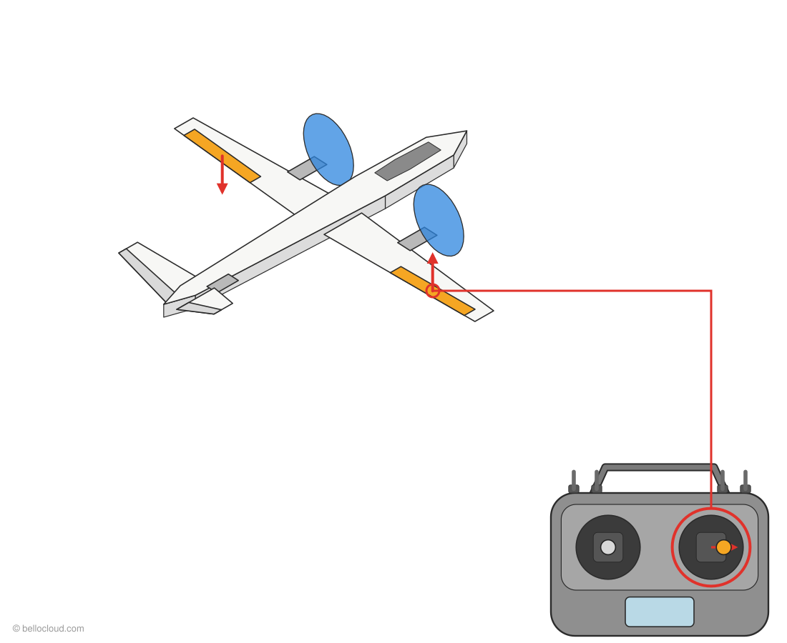
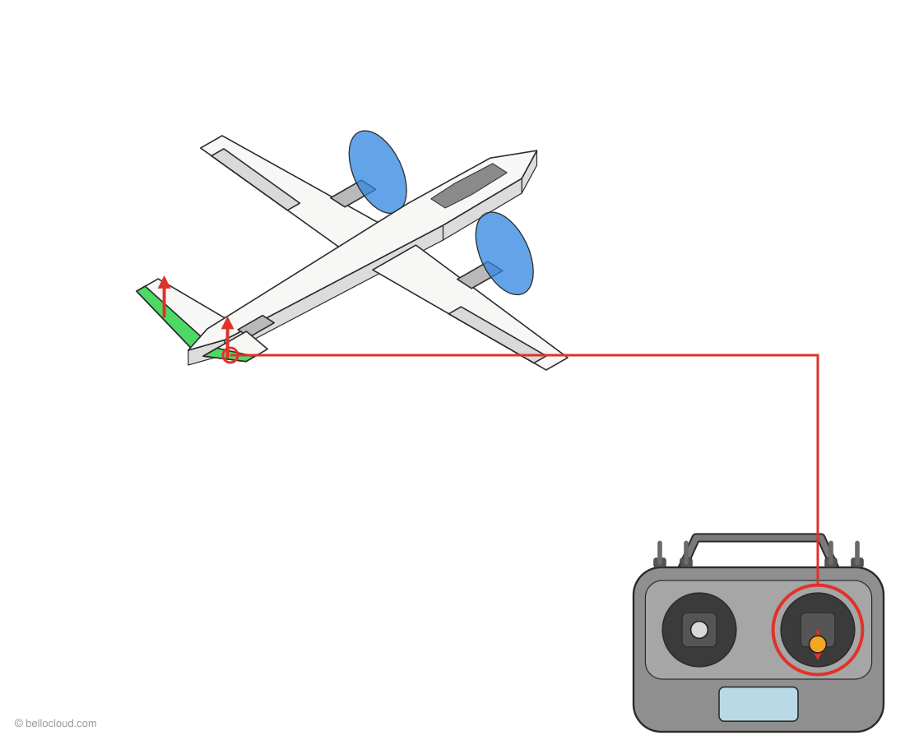
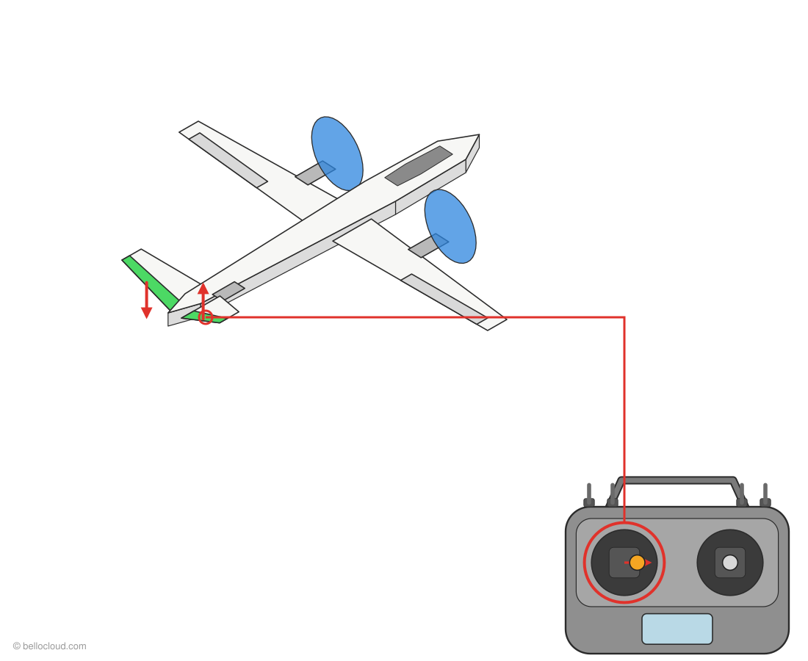
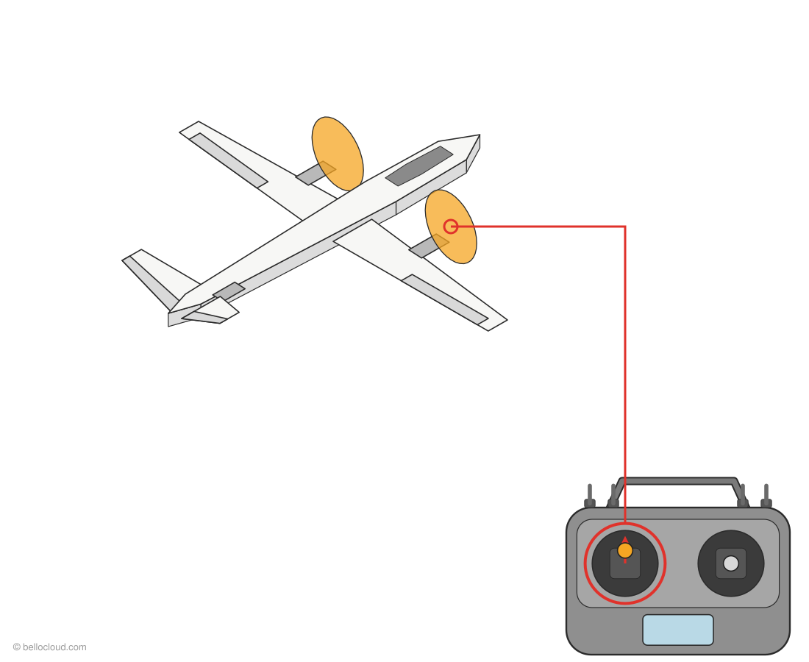
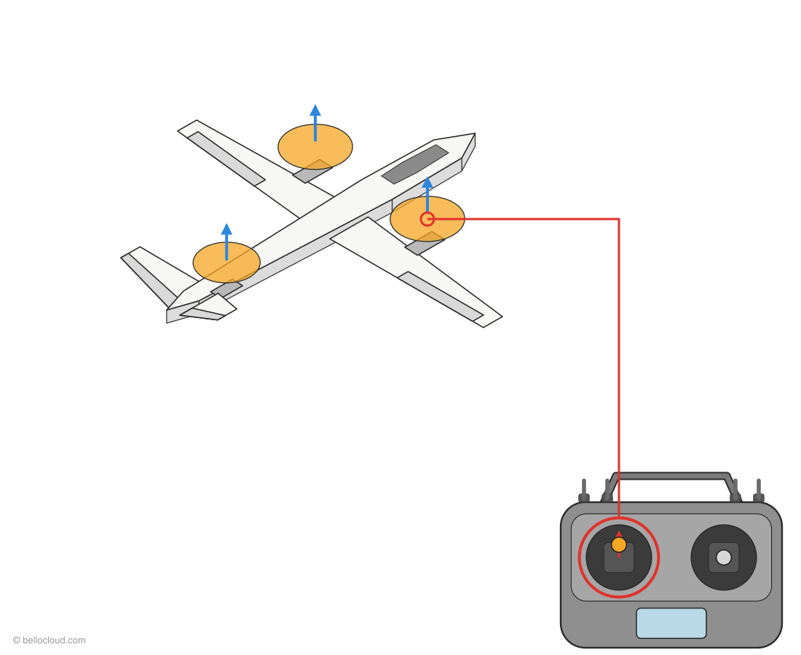
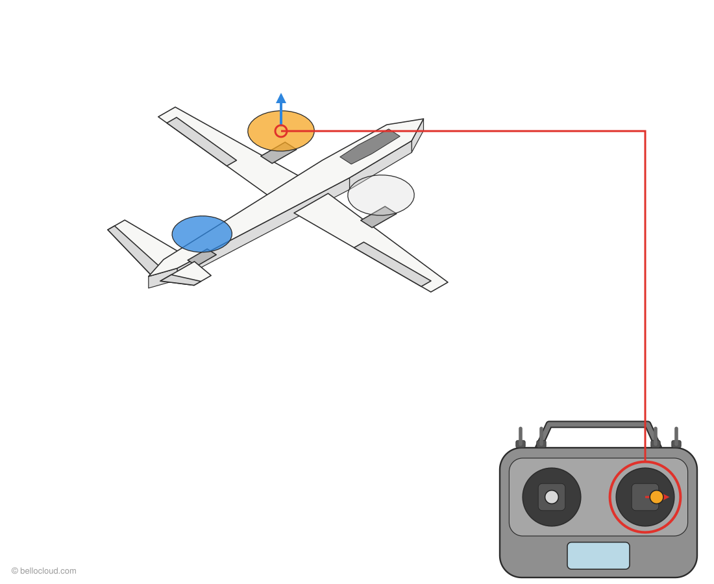
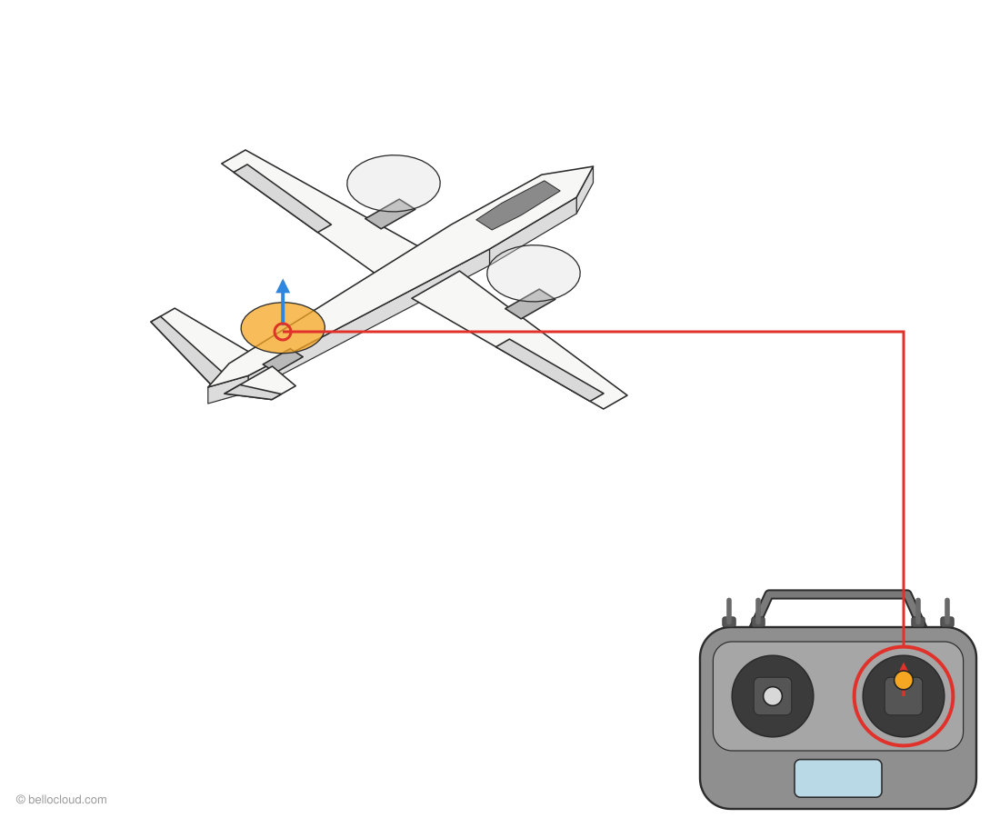
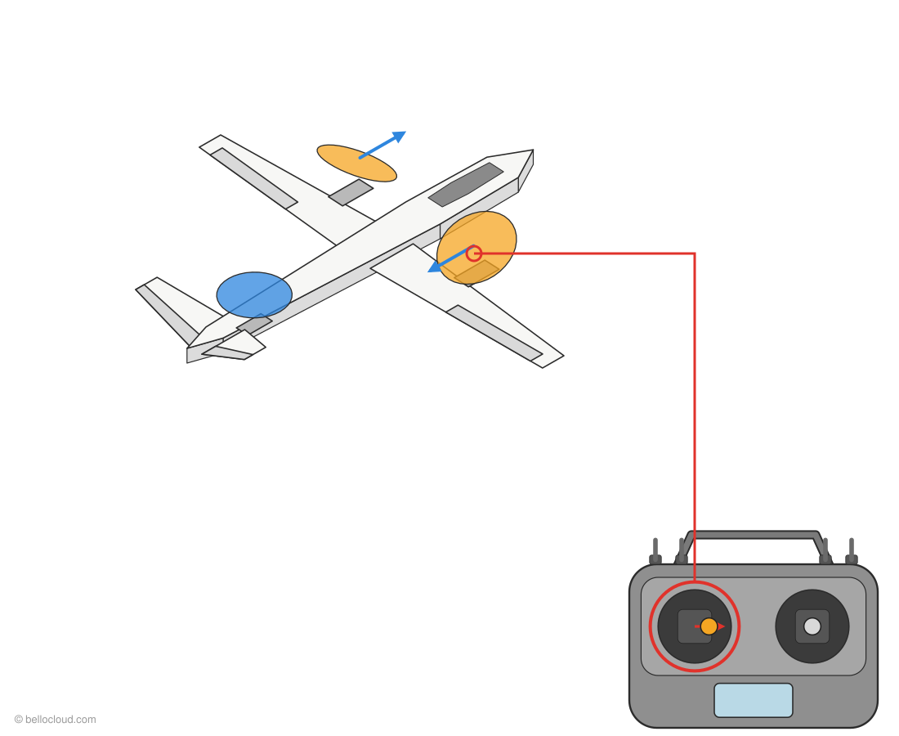
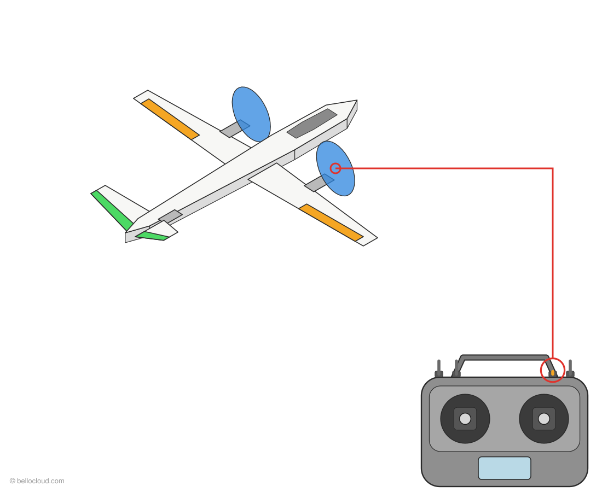
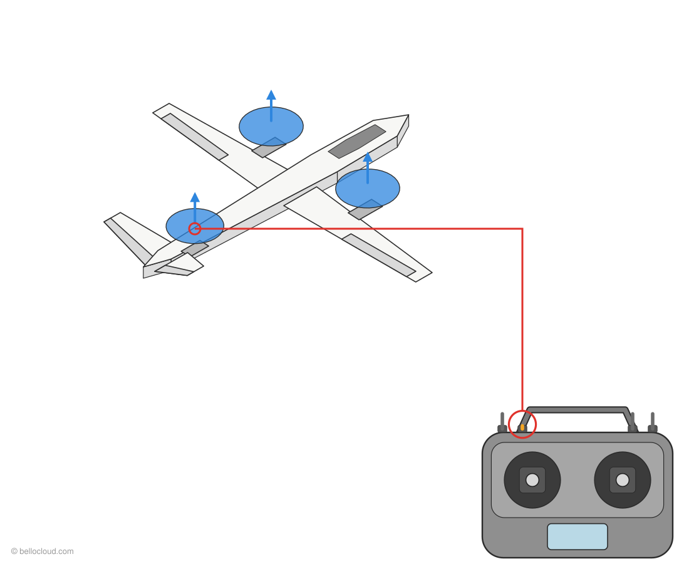

Manches et interrupteurs : comment le VTOL Y3 bouge
Ce que fait chaque manche et chaque interrupteur, en mode avion et en mode drone. Chaque dessin montre la commande que vous bougez et la partie de l'appareil qui réagit.
Mode avion (SWC en bas, FBWA)

Roulis à droite
Bougez : manche droit → à droite
L'aileron gauche descend, l'aileron droit monte. L'avion s'incline à droite. Manche à gauche = l'inverse.

Cabrer
Bougez : manche droit ↓ tiré vers vous
Les deux gouvernes de queue montent ensemble. Le nez se lève.
Piquer
Bougez : manche droit ↑ poussé vers l'avant
Les deux gouvernes de queue descendent ensemble. Le nez baisse.

Lacet à droite
Bougez : manche gauche → à droite
La gouverne de queue droite monte, la gauche descend (empennage en V). Le nez tourne à droite.

Plus vite
Bougez : manche gauche ↑ vers le haut
Les deux moteurs avant (basculés vers l'avant) tournent plus vite. Le moteur arrière reste arrêté.
Mode drone (SWC au milieu, QHOVER)

Monter
Bougez : manche gauche ↑ vers le haut
Les 3 moteurs accélèrent. L'appareil monte. En QHOVER, manche au milieu = maintien de l'altitude.

Roulis à droite
Bougez : manche droit → à droite
Le moteur avant gauche accélère, le droit ralentit. L'appareil s'incline et se déplace vers la droite.

Avancer
Bougez : manche droit ↑ poussé vers l'avant
Le moteur arrière accélère, les moteurs avant ralentissent. Le nez s'abaisse et l'appareil avance.

Tourner à droite
Bougez : manche gauche → à droite
Les servos de basculement inclinent le moteur gauche vers l'avant et le moteur droit vers l'arrière. L'appareil tourne à droite sur place.
Interrupteurs
Armer
Bougez : SWA ↓ en bas
Moteurs armés (seulement si toutes les vérifications de sécurité sont validées). SWA en haut = moteurs coupés immédiatement.
Armer au manche
Bougez : manche gauche ↓ + → 3 s
Arme aussi (ARMING_RUDDER = 2). Manche gauche ↓ + ← pendant 2 s = désarmer. Les gaz doivent être tout en bas.
Mode drone, direct
Bougez : SWC ↑ en haut = QSTABILIZE
Les moteurs avant pointent vers le haut. Le manche des gaz règle directement la puissance des moteurs : pas de maintien d'altitude. Utilisé pour les premiers tests moteurs.
Mode drone
Bougez : SWC au milieu = QHOVER
Les moteurs avant pointent vers le haut, les 3 moteurs assurent la portance. Manche des gaz au milieu = maintien de l'altitude.

Mode avion
Bougez : SWC ↓ en bas = FBWA
Les moteurs avant basculent vers l'avant, le moteur arrière s'arrête, les ailerons et l'empennage en V dirigent l'appareil.

Retour au point de départ
Bougez : SWB ↓ en bas = QRTL
Revient au point de décollage en drone et atterrit à la verticale (Q_RTL_MODE = 3). SWB en haut = retour au mode de SWC. Gardez SWB en haut pour armer.